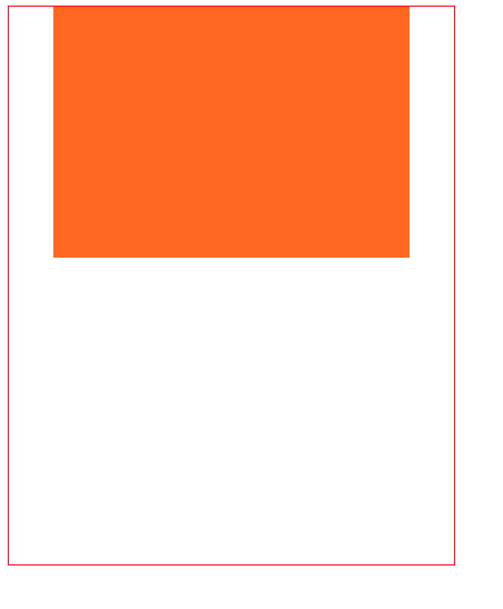

POSTS
CSS之grid布局
grid 布局简介
grid 布局是 CSS 一种功能强大的布局方案，常用于二维布局
grid 的布局结构
和 flex 布局一样，grid 布局也分为容器部分(container)和容器内元素部分(items)
如何使用 grid 布局？
使用 grid 布局比较简单，只需要在 CSS 中声明容器是 grid 容器就可以使用 grid 布局
<div class="container"></div>
.container{
display:grid/inline-grid;
}
划分 grid 容器
grid-template-rows 属性用于划分网格行
grid-template-columns 属性用于划分网格列
属性的取值可以是非负数长度，可以是百分数，也可以是 fr
fr 是将空间按照份数成比例划分
.container{
grid-template-rows:25% 100px auto;
grid-template-columns:40px 50px auto 50px 40px;
}

如何为 items 选定范围？
只需要确定构成 item 范围的四根线则可以确定 item 的范围，通过以下四个属性则可以确定
- grid-column-start
- grid-column-end
- grid-row-start
grid-row-end
.items:nth-child(x){ grid-column-start:2; grid-column-end:5; grid-row-start:1; grid-row-end:3; }
划分例子
<div class="container">
<div class="item"></div>
</div>
.container {
width: 400px;
height: 500px;
display: inline-grid;
grid-template-rows: 25% 100px auto;
grid-template-columns: 40px 50px auto 50px 40px;
border: 1px solid red;
}
.item {
background-color: #f60;
grid-column-start: 2;
grid-column-end: 5;
grid-row-start: 1;
grid-row-end: 3;
}

grid 分区
在分区的时候，我们可以采用 areas 属性去完成分区，通过给每个区起名字来完成分区
.container{ grid-template-areas: "big sm1 sm2 sm3" "big sm4 sm5 sm6" ; }用 grid-area 属性为 item 指定分区
.container > .item{ grid-area:big; }
grid 内 item 空隙
用 grid-row-gap 和 grid-column-gap 去声明
.container{
grid-column-gap:15px;
grid-row-gap:15px;
}